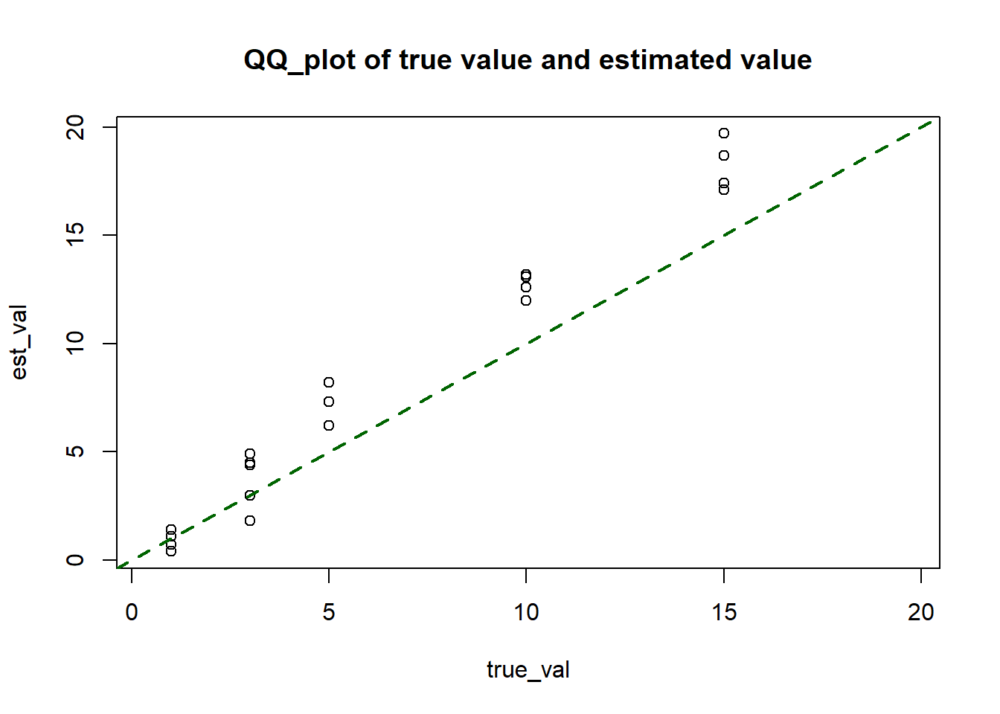
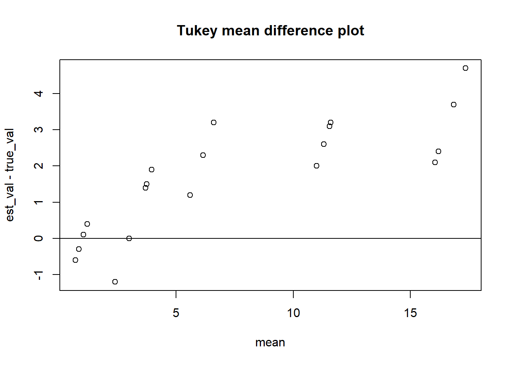

EDA 방법 이외의 회귀분석, 다변량, 실험계획 등에서 배운 다른 방법도 사용할 수 있으나 EDA 방법이 기본이 되어야 한다. 같은 자료를 여러 가지 방법으로 분석할 수 있다. 한 가지 방법으로 끝내지 말고 다른 방법은 없는지 생각하여 보아라. 자료파일은 ASCII 형태로 되어 있다. [보조프로그램]의 [메모장]으로 파일을 열어 그 형식을 확인한 후 엑셀을 통하거나 R에서 직접 읽어 들여라. 아래한글에서도 열 수 있으나 <문자코드>를 잘 선택하여야 한다.
작업한 부분은 기한 이내에 제출하여야 그 부분만이라도 감점없이 점수를 받을 수 있다.
1.
다음 자료는 사춘기 여성의 신경성 식욕 감퇴증에 대하여 일정 기간 동안 세 가지 방법으로 치료한 결과이다. 어느 방법이 가장 큰 효과를 보았나? [ANOREXIA.DAT]
I Cognitive behavioral treatment
II Control; standard treatment
III Family therapy
Weights in Kg
전처리 후 정리
# weights # I Cognitive behavioral treatment cbt=read.delim(file="C://r/ANOREXIA.DAT",header=F)[c(1,2)]names(cbt)=c("before","after")head(cbt,5)
before after
1 80.5 82.2
2 84.9 85.6
3 81.5 81.4
4 82.6 81.9
5 79.9 76.4
dim(cbt)
[1] 29 2
# II Control; standard treatmentcontrol=read.delim(file="C://r/ANOREXIA.DAT",header=F)[c(3,4)][c(1:26),]names(control)=c("before","after")head(control,5)
before after
1 80.7 80.2
2 89.4 80.1
3 91.8 86.4
4 74.0 86.3
5 78.1 76.1
dim(control)
[1] 26 2
# III Family therapyfamily=read.delim(file="C://r/ANOREXIA.DAT",header=F)[c(5,6)][c(1:17),]names(family)=c("before","after")head(family,5)
before after
1 83.8 95.2
2 83.3 94.3
3 86.0 91.5
4 82.5 91.9
5 86.7 100.3
dim(family)
[1] 17 2
항목의 수가 Cognitive behavioral treatment: 29 Control group: 26 Family Therapy: 17로 서로 다르다. 따라서 결측치를 처리하여 각각을 나누어서 표현하였다.
Treatment별로 기술통계량을 제시하고 시각화 한 후 자료의 특성을 확인하고 각 Sample에 대한 paired t-Test를 진행할 예정이다.
먼저, Cognitive behavioral treatment의 분석이다.
summary(cbt)
before after
Min. :70.00 Min. : 71.3
1st Qu.:80.40 1st Qu.: 81.9
Median :82.60 Median : 83.9
Mean :82.69 Mean : 85.7
3rd Qu.:85.00 3rd Qu.: 90.9
Max. :94.90 Max. :103.6
85.7-82.69
[1] 3.01
83.9-82.60
[1] 1.3
# Cognitive behavioral treatment를 시행하기 이전 집단과 이후집단의 평균은 약 3kg정도 차이나고, median값은 1.3kg정도 차이나는 것으로 보인다.# 성장기의 식용 감퇴증이 다소 완화되어진 것을 확인할 수 있다.fivenum(cbt$before)
[1] 70.0 80.4 82.6 85.0 94.9
fivenum(cbt$after)
[1] 71.3 81.9 83.9 90.9 103.6
# Stem and leaf Plot을 통해서 두 집단의 분포를 비교해 보았는데 treament 이전 집단의 경우 stem 8*을 기준으로 leaf들이 어느정도 종모양의 대칭적 분포를 이루고 있는데, 반면 treatment 이후 집단의 경우 stem 8*이 중심이 되어지는 것은 맞지만 다소 퍼지게 된 것을 확인할 수 있다. library(aplpack)stem.leaf.backback(cbt$before,cbt$after,rule.line ="Sturges")
lsum(cbt$after)[2,5]-lsum(cbt$after)[2,3] #더 넓게 퍼져있는 것을 확인할 수 있음.
[1] 9
# Kurtosis (E-spread / H-spread - 1.705)(lvd1[3,5]-lvd1[3,3])/(lvd1[2,5]-lvd1[2,3])-1.705# more peaked than normal
[1] 0.3928261
(lvd2[3,5]-lvd2[3,3])/(lvd2[2,5]-lvd2[2,3])-1.705# more peaked than normal (Kurtosis값도 더 크게 나타남)
[1] 0.5616667
# 정규성qqnorm(cbt$before, ylab="before quantiles",main="before");qqline(cbt$before, col='red',lty=2,lwd=2) #위에서 언급했던 두개의 Outlier들만 제외하면 대부분 정규분포를 잘 따르고 있는 것이 확인되어지고 있다. fiv1=fivenum(cbt$before)(pseudosigma1 = (fiv1[4]-fiv1[2])/1.34)
[1] 3.432836
sd(cbt$before) # 약 1.4정도의 차이
[1] 4.845495
abline(fiv1[3],pseudosigma1,col="blue",lty=2,lwd=2)legend(x =-2, y =92, c("qqline", "robustline"), lty=2,lwd=2,col =c("red","blue")) # 거의 일치중
qqnorm(cbt$after, ylab="after quantiles", main="after");qqline(cbt$after, col='red',lty=2,lwd=2) #정규분포를 따른다고 보기 어려운 이유가 값들이 직선을 따르기 보다는 곡선의 형태를 띄고 있음을 확인할 수 있다. fiv2=fivenum(cbt$after)(pseudosigma2 = (fiv2[4]-fiv2[2])/1.34)
# Paired T-test# H0: cbt$after-cbt$before=0 H1: cbt$after-cbt$before>0 cbt_test<-t.test(cbt$after,cbt$before, paired=TRUE, alternative="greater",conf.level=0.05)cbt_test # reject null hypothesis, the weight of after treatment is heavier
Paired t-test
data: cbt$after and cbt$before
t = 2.2156, df = 28, p-value = 0.01751
alternative hypothesis: true mean difference is greater than 0
5 percent confidence interval:
5.315595 Inf
sample estimates:
mean difference
3.006897
다음으로는 통제집단의 분석이다.
summary(control)
before after
Min. :70.50 Min. :73.00
1st Qu.:77.72 1st Qu.:77.58
Median :80.65 Median :80.70
Mean :81.56 Mean :81.11
3rd Qu.:85.88 3rd Qu.:84.67
Max. :91.80 Max. :89.60
mean(control$after)-mean(control$before)
[1] -0.45
median(control$after)-median(control$before)
[1] 0.05
# 통제집단의 경우 실험 시행하기 이전 집단과 실험 이후 집단의 평균은 0.45kg정도 차이를 보이며 중위값은 큰 차이가 없다.# Cognitive behavioral treatment에서 보였던 차이보다 적은 차이를 보이고 있는 것을 확인할 수 있다.fivenum(control$before)
[1] 70.50 77.60 80.65 86.00 91.80
fivenum(control$after)
[1] 73.0 77.4 80.7 84.7 89.6
# Stem and leaf Plot을 통해서 두 집단의 분포를 비교해 보았는데 처치 이전 집단의 경우 stem 7. stem 8. 두개의 축을 기준으로 Cluster를 가지고 있는데 비해 처치 이후의 집단의 경우 stem 7., stem8*두개의 stem을 기준으로 어느정도 대칭적으로 종모양을 보이고 있는 것이 확인된다.stem.leaf.backback(control$before,control$after,rule.line ="Sturge")
lsum(control$after)[2,5]-lsum(control$after)[2,3] # 처치 이후 spread의 크기가 더 줄어들었음
[1] 7.3
# Kurtosis (E-spread / H-spread - 1.705)(lvd3[3,5]-lvd3[3,3])/(lvd3[2,5]-lvd3[2,3])-1.705# less peaked than normal
[1] -0.08595238
(lvd4[3,5]-lvd4[3,3])/(lvd4[2,5]-lvd4[2,3])-1.705# less peaked than normal (Kurtosis값은 after집단에서 더 작게 나타남)
[1] -0.1570548
# 정규성qqnorm(control$before, ylab="before quantiles",main="before");qqline(control$before, col='red',lty=2) # 점들이 완벽히 qqline을 따르기 보다는 곡선의 형태를 이루고 있는 것을 확인할 수 있다.fiv3=fivenum(control$before)(pseudosigma3 = (fiv3[4]-fiv3[2])/1.34)
qqnorm(control$after, ylab="after quantiles", main="after");qqline(control$after, col='red',lty=2) # 처치 이전에 비해서 처치 이후의 데이터들이 직선을 따르기 때문에 정규분포를 조금 더 따르고 있다. fiv4=fivenum(control$after)(pseudosigma4 = (fiv4[4]-fiv4[2])/1.34)
[1] 5.447761
sd(control$after) # 약 0.7정도의 차이
[1] 4.744253
abline(fiv4[3],pseudosigma4,col="blue",lty=2)legend(x =-2, y =88, c("qqline", "robustline"), lty=2,lwd=2,col =c("red","blue")) # 거의 차이가 없음
# Paired T-test# H0: 처지 이전의 집단과 처치 이후의 집단의 몸무게 차이는 없다. H1: 처치 이후의 집단의 몸무게가 처지 이전의 집단보다 더 무겁다.control_test<-t.test(control$after,control$before, paired=TRUE, alternative="greater",conf.level=0.05)control_test # do not reject null hypothesis.
Paired t-test
data: control$after and control$before
t = -0.28723, df = 25, p-value = 0.6118
alternative hypothesis: true mean difference is greater than 0
5 percent confidence interval:
2.226168 Inf
sample estimates:
mean difference
-0.45
마지막으로 Family therapy에 대한 분석이다.
summary(family)
before after
Min. :73.40 Min. : 75.20
1st Qu.:80.50 1st Qu.: 90.70
Median :83.30 Median : 92.50
Mean :83.23 Mean : 90.49
3rd Qu.:86.00 3rd Qu.: 95.20
Max. :94.20 Max. :101.60
mean(family$after)-mean(family$before)
[1] 7.264706
median(family$after)-median(family$before)
[1] 9.2
# Family Therapy의 경우 실험 시행하기 이전 집단과 실험 이후 집단의 평균은 7.2kg정도 차이를 보이며 중위값은 9.2kg정도 차이가 나타난다.# Cognitive behavioral treatment에서 보였던 차이보다 적은 차이를 보이고 있는 것을 확인할 수 있다.fivenum(family$before)
[1] 73.4 80.5 83.3 86.0 94.2
fivenum(family$after)
[1] 75.2 90.7 92.5 95.2 101.6
# Stem and leaf Plot을 통해서 두 집단의 분포를 비교해 보았는데 처치 이전 집단의 경우 stem 8*을 기준으로 대칭적인 종모양을 보이는데 비해 처치 이후의 집단의 경우 stem 9*이 가장 많고 대칭적이지 않으며 중간에 빈 부분이 보인다.stem.leaf.backback(family$before,family$after,rule.line ="Sturge")
# Skewnessskewness(family$before) # skewed to the left (but 매우 미세함)
[1] -0.01818182
skewness(family$after) # skewed to the right
[1] 0.2
# Letter Value Displaysource("http://mgimond.github.io/ES218/es218.R")lvd5=(lsum(family$before,6))lvd6=(lsum(family$after,6))lvd5
letter depth lower mid upper spread
1 M 9.0 83.30 83.30 83.30 0.0
2 H 5.0 80.50 83.25 86.00 5.5
3 E 3.0 77.60 82.45 87.30 9.7
4 D 2.0 76.90 83.40 89.90 13.0
5 C 1.5 75.15 83.60 92.05 16.9
6 B 1.0 73.40 83.80 94.20 20.8
lvd6
letter depth lower mid upper spread
1 M 9.0 92.50 92.50 92.50 0.0
2 H 5.0 90.70 92.95 95.20 4.5
3 E 3.0 76.80 87.40 98.00 21.2
4 D 2.0 76.70 88.50 100.30 23.6
5 C 1.5 75.95 88.45 100.95 25.0
6 B 1.0 75.20 88.40 101.60 26.4
# H-Spreadlvd5[2,5]-lvd5[2,3]
[1] 5.5
lvd6[2,5]-lvd6[2,3] # 처치 이전이후의 차이가 1정도로 크지 않음.
[1] 4.5
# Kurtosis (E-spread / H-spread - 1.705)(lvd5[3,5]-lvd5[3,3])/(lvd5[2,5]-lvd5[2,3])-1.705# 정규분포와 거의 차이가 없음
[1] 0.05863636
(lvd6[3,5]-lvd6[3,3])/(lvd6[2,5]-lvd6[2,3])-1.705# more peaked than normal (Kurtosis값은 after집단에서 더 작게 나타남)
[1] 3.006111
# 다만 after집단의 분포가 17개의 자료중 4개의 outlier로 인해서 왜곡되었을 가능성이 있다.# 정규성qqnorm(family$before, ylab="before quantiles",main="before");qqline(family$before, col='red',lty=2) # 점들이 직선을 잘 따르고 있는 것으로 보인다. fiv5=fivenum(family$before)(pseudosigma5 = (fiv5[4]-fiv5[2])/1.34)
[1] 4.104478
sd(family$before) # 약 0.9정도의 차이
[1] 5.016693
abline(fiv5[3],pseudosigma5,col="blue",lty=2)legend(x =-1.8, y =92, c("qqline", "robustline"), lty=2,lwd=2,col =c("red","blue")) # 거의 차이가 없음
qqnorm(family$after, ylab="after quantiles", main="after");qqline(family$after, col='red',lty=2) # 이상치 4개를 제외하면 나머지들이 직선을 잘 따르는 것으로 보이나 표본이 작아 신뢰성이 낮다. fiv6=fivenum(family$after)(pseudosigma6 = (fiv6[4]-fiv6[2])/1.34)
[1] 3.358209
sd(family$after) # 약 5 정도의 차이 - 매우 큼
[1] 8.475072
abline(fiv6[3],pseudosigma6,col="blue",lty=2)legend(x =-1.8, y =99, c("qqline", "robustline"), lty=2,lwd=2,col =c("red","blue")) # 거의 차이가 없음
# Paired T-test# H0: family$after-family$before=0 H1:family$after-family$before>0family_test<-t.test(family$after,family$before, paired=TRUE, alternative="greater",conf.level=0.05)family_test # Reject Null Hypothesis. The weight of treated group is larger than the group without treatment.
Paired t-test
data: family$after and family$before
t = 4.1849, df = 16, p-value = 0.0003501
alternative hypothesis: true mean difference is greater than 0
5 percent confidence interval:
10.29544 Inf
sample estimates:
mean difference
7.264706
세집단의 차이에 대해 일원분산분석을 진행하고자 한다.
cbt_diff=cbt$after-cbt$beforecon_diff=control$after-control$beforefam_diff=family$after-family$beforeboxplot(cbt_diff,con_diff,fam_diff,names=c("Cognitive","Control","Family"))$out #Cognitive Behavior Treament 7개의 outlier
Df Sum Sq Mean Sq F value Pr(>F)
naming 2 615 307.32 5.422 0.0065 **
Residuals 69 3911 56.68
---
Signif. codes: 0 '***' 0.001 '**' 0.01 '*' 0.05 '.' 0.1 ' ' 1
#H0: 각 집단간 평균은 차이가 없다. #H1: 각 집단간 평균은 차이가 없지 않다.# Reject Null Hypothesis. 신뢰수준 95% 수준에서 사춘기 여성의 신경성 식욕 감퇴증의 각 치료 방법(Cognitive behavior, control, family treatment)을 적용할 경우 각 집단간 몸무게에서 차이를 보인다. bartlett.test(value~naming, data = diffs) #H0: 오차의 등분산성, 유의수준 10%에서 Select Null Hypothesis. (오차의 등분산성 만족)
Bartlett test of homogeneity of variances
data: value by naming
Bartlett's K-squared = 0.30428, df = 2, p-value = 0.8589
tapply(value,naming,mean)
cbt control family
3.006897 -0.450000 7.264706
TukeyHSD(aov1) # Tukey multiple comparisons of means 95% family-wise
Tukey multiple comparisons of means
95% family-wise confidence level
Fit: aov(formula = value ~ naming, data = diffs)
$naming
diff lwr upr p adj
control-cbt -3.456897 -8.327276 1.413483 0.2124428
family-cbt 4.257809 -1.250554 9.766173 0.1607461
family-control 7.714706 2.090124 13.339288 0.0045127
# install.packages("agricolae")library(agricolae)
Attaching package: 'agricolae'
The following object is masked _by_ '.GlobalEnv':
skewness
HSD.test(aov1, "naming", group=TRUE,console=TRUE)
Study: aov1 ~ "naming"
HSD Test for value
Mean Square Error: 56.67743
naming, means
value std r Min Max
cbt 3.006897 7.308504 29 -9.1 20.9
control -0.450000 7.988705 26 -12.2 15.9
family 7.264706 7.157421 17 -5.3 21.5
Alpha: 0.05 ; DF Error: 69
Critical Value of Studentized Range: 3.387483
Groups according to probability of means differences and alpha level( 0.05 )
Treatments with the same letter are not significantly different.
value groups
family 7.264706 a
cbt 3.006897 ab
control -0.450000 b
LSD.test(aov1, "naming", group=TRUE,console=TRUE)
Study: aov1 ~ "naming"
LSD t Test for value
Mean Square Error: 56.67743
naming, means and individual ( 95 %) CI
value std r LCL UCL Min Max
cbt 3.006897 7.308504 29 0.217970 5.795823 -9.1 20.9
control -0.450000 7.988705 26 -3.395435 2.495435 -12.2 15.9
family 7.264706 7.157421 17 3.622105 10.907307 -5.3 21.5
Alpha: 0.05 ; DF Error: 69
Critical Value of t: 1.994945
Groups according to probability of means differences and alpha level( 0.05 )
Treatments with the same letter are not significantly different.
value groups
family 7.264706 a
cbt 3.006897 ab
control -0.450000 b
통제집단에 비해서 cognitive behavior treatemnt는 3.46kg정도 높음. cognitive behavior treatment 집단에 비해서 family treatemnt 집단의 경우 4.26kg 정도 높음. 따라서 가장 효과가 좋은 순서대로 family treatment, cognitive behavior treatment, control 순이다.
그러나 cognitive behavior treatment집단이 다른 집단에 비해서 크거나 작다라고 보기에는 HSD, LSD test를 통해서 확인할 경우 신뢰구간이 겹쳐 다소 모호한 부분이 있다. 실제 Boxplot을 통해 확인할 경우 outlier들이 넓게 퍼져있어서 cognitive behavior treatment집단의 몸무게가 유의수준 5%수준에서 두 집단의 몸무게와 완전히 다르다고 보기 어렵다.
treatment ba value
1 family before 83.8
2 family before 83.3
3 family before 86.0
4 family before 82.5
5 family before 86.7
6 family before 79.6
7 family before 76.9
8 family before 94.2
9 family before 73.4
10 family before 80.5
11 family before 81.6
12 family before 82.1
13 family before 77.6
14 family before 83.5
15 family before 89.9
16 family before 86.0
17 family before 87.3
18 family after 95.2
19 family after 94.3
20 family after 91.5
21 family after 91.9
22 family after 100.3
23 family after 76.7
24 family after 76.8
25 family after 101.6
26 family after 94.9
27 family after 75.2
28 family after 77.8
29 family after 95.5
30 family after 90.7
31 family after 92.5
32 family after 93.8
33 family after 91.7
34 family after 98.0
HSD.test(aov3, "treatment", group=TRUE,console=TRUE) # family cognitive standard 순이지만 cognitive behavior treatment는 a그룹 b그룹 모두에 속하므로 해석에 유의해야 한다.
Study: aov3 ~ "treatment"
HSD Test for value
Mean Square Error: 41.76232
treatment, means
value std r Min Max
cognitive 84.19310 6.935337 58 70.0 103.6
control 81.33269 5.201045 52 70.5 91.8
family 86.86176 7.785963 34 73.4 101.6
Alpha: 0.05 ; DF Error: 140
Critical Value of Studentized Range: 3.350136
Groups according to probability of means differences and alpha level( 0.05 )
Treatments with the same letter are not significantly different.
value groups
family 86.86176 a
cognitive 84.19310 ab
control 81.33269 b
HSD.test(aov3, "ba", group=TRUE,console=TRUE) # 전반적으로 더 높다 treatment 취한 그룹에서
Study: aov3 ~ "ba"
HSD Test for value
Mean Square Error: 41.76232
ba, means
value std r Min Max
after 85.17222 8.035173 72 71.3 103.6
before 82.40833 5.182466 72 70.0 94.9
Alpha: 0.05 ; DF Error: 140
Critical Value of Studentized Range: 2.795976
Minimun Significant Difference: 2.129411
Treatments with the same letter are not significantly different.
value groups
after 85.17222 a
before 82.40833 b
id treatment ba value
1 1 control before 80.7
2 2 control before 89.4
3 3 control before 91.8
4 4 control before 74.0
5 5 control before 78.1
6 6 control before 88.3
7 7 control before 87.3
8 8 control before 75.1
9 9 control before 80.6
10 10 control before 78.4
11 11 control before 77.6
12 12 control before 88.7
13 13 control before 81.3
14 14 control before 78.1
15 15 control before 70.5
16 16 control before 77.3
17 17 control before 85.2
18 18 control before 86.0
19 19 control before 84.1
20 20 control before 79.7
21 21 control before 85.5
22 22 control before 84.4
23 23 control before 79.6
24 24 control before 77.5
25 25 control before 72.3
26 26 control before 89.0
27 27 control after 80.2
28 28 control after 80.1
29 29 control after 86.4
30 30 control after 86.3
31 31 control after 76.1
32 32 control after 78.1
33 33 control after 75.1
34 34 control after 86.7
35 35 control after 73.5
36 36 control after 84.6
37 37 control after 77.4
38 38 control after 79.5
39 39 control after 89.6
40 40 control after 81.4
41 41 control after 81.8
42 42 control after 77.3
43 43 control after 84.2
44 44 control after 75.4
45 45 control after 79.5
46 46 control after 73.0
47 47 control after 88.3
48 48 control after 84.7
49 49 control after 81.4
50 50 control after 81.2
51 51 control after 88.2
52 52 control after 78.8
53 53 cognitive before 80.5
54 54 cognitive before 84.9
55 55 cognitive before 81.5
56 56 cognitive before 82.6
57 57 cognitive before 79.9
58 58 cognitive before 88.7
59 59 cognitive before 94.9
60 60 cognitive before 76.3
61 61 cognitive before 81.0
62 62 cognitive before 80.5
63 63 cognitive before 85.0
64 64 cognitive before 89.2
65 65 cognitive before 81.3
66 66 cognitive before 76.5
67 67 cognitive before 70.0
68 68 cognitive before 80.4
69 69 cognitive before 83.3
70 70 cognitive before 83.0
71 71 cognitive before 87.7
72 72 cognitive before 84.2
73 73 cognitive before 86.4
74 74 cognitive before 76.5
75 75 cognitive before 80.2
76 76 cognitive before 87.8
77 77 cognitive before 83.3
78 78 cognitive before 79.7
79 79 cognitive before 84.5
80 80 cognitive before 80.8
81 81 cognitive before 87.4
82 82 cognitive after 82.2
83 83 cognitive after 85.6
84 84 cognitive after 81.4
85 85 cognitive after 81.9
86 86 cognitive after 76.4
87 87 cognitive after 103.6
88 88 cognitive after 98.4
89 89 cognitive after 93.4
90 90 cognitive after 73.4
91 91 cognitive after 82.1
92 92 cognitive after 96.7
93 93 cognitive after 95.3
94 94 cognitive after 82.4
95 95 cognitive after 72.5
96 96 cognitive after 90.9
97 97 cognitive after 71.3
98 98 cognitive after 85.4
99 99 cognitive after 81.6
100 100 cognitive after 89.1
101 101 cognitive after 83.9
102 102 cognitive after 82.7
103 103 cognitive after 75.7
104 104 cognitive after 82.6
105 105 cognitive after 100.4
106 106 cognitive after 85.2
107 107 cognitive after 83.6
108 108 cognitive after 84.6
109 109 cognitive after 96.2
110 110 cognitive after 86.7
111 111 family before 83.8
112 112 family before 83.3
113 113 family before 86.0
114 114 family before 82.5
115 115 family before 86.7
116 116 family before 79.6
117 117 family before 76.9
118 118 family before 94.2
119 119 family before 73.4
120 120 family before 80.5
121 121 family before 81.6
122 122 family before 82.1
123 123 family before 77.6
124 124 family before 83.5
125 125 family before 89.9
126 126 family before 86.0
127 127 family before 87.3
128 128 family after 95.2
129 129 family after 94.3
130 130 family after 91.5
131 131 family after 91.9
132 132 family after 100.3
133 133 family after 76.7
134 134 family after 76.8
135 135 family after 101.6
136 136 family after 94.9
137 137 family after 75.2
138 138 family after 77.8
139 139 family after 95.5
140 140 family after 90.7
141 141 family after 92.5
142 142 family after 93.8
143 143 family after 91.7
144 144 family after 98.0
Study: aov4 ~ "treatment"
HSD Test for value
Mean Square Error: 40.1406
treatment, means
value std r Min Max
cognitive 84.19310 6.935337 58 70.0 103.6
control 81.33269 5.201045 52 70.5 91.8
family 86.86176 7.785963 34 73.4 101.6
Alpha: 0.05 ; DF Error: 138
Critical Value of Studentized Range: 3.350657
Groups according to probability of means differences and alpha level( 0.05 )
Treatments with the same letter are not significantly different.
value groups
family 86.86176 a
cognitive 84.19310 ab
control 81.33269 b
HSD.test(aov4, "ba", group=T,console=TRUE)
Study: aov4 ~ "ba"
HSD Test for value
Mean Square Error: 40.1406
ba, means
value std r Min Max
after 85.17222 8.035173 72 71.3 103.6
before 82.40833 5.182466 72 70.0 94.9
Alpha: 0.05 ; DF Error: 138
Critical Value of Studentized Range: 2.796329
Minimun Significant Difference: 2.087921
Treatments with the same letter are not significantly different.
value groups
after 85.17222 a
before 82.40833 b
2.
근육 피로도의 지표로 쓰이는 혈중젖산농도의 참값과 계측기에서의 값의 자료이다. 계측기가 정확하다면 두 자료의 직선식은 원점을 지나는 45도 직선이어야 한다. 분석하여라.
summary(lactic) #평균 실제 젖산값은 6.7, 평균 측정 젖산값은 8.385로 실제 값에 비해서 높게 측정되었다.
true_val est_val
Min. : 1.0 Min. : 0.400
1st Qu.: 3.0 1st Qu.: 2.700
Median : 5.0 Median : 6.750
Mean : 6.7 Mean : 8.385
3rd Qu.:10.0 3rd Qu.:13.125
Max. :15.0 Max. :19.700
medtrue <-as.vector(3)medest <-as.vector(3)medtrue[1] <-median(lactic$true_val[1:6]); medest[1] <-median(lactic$est_val[1:6])medtrue[2] <-median(lactic$true_val[7:14]); medest[2] <-median(lactic$est_val[7:14])medtrue[3] <-median(lactic$true_val[15:20]); medest[3] <-median(lactic$est_val[15:20])plot(medest~medtrue, type="b",main="True value와 Estimation Value 사이의 관계") # 다소 Concave 한 관계인 것으로 보인다.
plot(lactic$est_val~lactic$true_val,main="relationship of truevalue and estimatedvalue")(z <-line(x=lactic$true_val,y=lactic$est_val))
The following objects are masked _by_ .GlobalEnv:
est_val, true_val
# 두 자료가 같은 분포에서 온게 맞을까?qqplot(true_val,est_val,main="qqplot")abline(line(qqplot(true_val,est_val,main="qqplot"))$coef) # 전반적으로 Tukey's robust line estimation 직선위에 잘 존재하는 것으로 보인다.
# 분포 예측하기library(aplpack)stem.leaf.backback(true_val,est_val,rule.line="Sturges") # 두 자료 모두 정규분포보다는 Skewed to the right 되어 있는 것을 어느정도 예측할 수 있다.
#점들이 Tukey's robust line estimation위를 따르기 보다는 역s자 형태의 곡선의 형태를 띄고 있는 것을 확인할 수 있다.#허명회교수님의 책 113pg에 보면 혼합정규분포에서의 모의생성자료가 역 S자 형태를 띄고 있는데 현재 Plot도 그러한 것으로 보아 실제 데이터와 측정치 데이터가 서로 다른 분포를 따르고 있지 않을까 추측할 수 있다.#또한, 꼬리가 짧은 분포일때의 형태와 비슷하게 왼쪽 끝 자료들이 직선을 벗어나있다. # 두 데이터는 서로 다른 분포에서 왔다고 추정할 수 있다. 그러나 눈대중으로 판단하는 것은 한계가 있기 때문에 이 판단을 재확인하기 위해서는 Tuckey의 Mean-Difference Plot을 활용해야한다. qqplot(x=true_val,y=est_val,xlim=c(min(true_val,est_val),max(true_val,est_val)),ylim=c(min(true_val,est_val),max(true_val,est_val)) ,main="QQ_plot of true value and estimated value")abline(0,1,lty=2,col="darkgreen",lwd=2) #초반의 일부 데이터를 제외하면 대부분이 주대각선 위에 존재하고 있다.

# 따라서 두 Estimation의 평균은 같다고 보기 힘들다.qq.x <-qqplot(x=true_val,y=est_val)$xqq.y <-qqplot(x=true_val,y=est_val)$y
plot((qq.x+qq.y)/2, qq.y-qq.x, main="Tukey mean difference plot", ylab="est_val - true_val", xlab="mean")abline(0,0)

# mean difference plot을 통해서 확인하더라도 몇몇자료를 제외하면 대부분의 자료가 x축보다 위에 존재하는 것으로 보인다.
qqplot을 통해서 처음 확인하였을 때 자료들이 전부 직선위에 존재하는 것 처럼 보였으나 실제로 자료들을 합쳐서 qqplot을 그릴경우 역s자 형태로 나타나서 동일한 분포에서 나온 데이터가 아닐 수도 있음을 확인할 수 있었고 mean-difference plot을 통해서 이를 재 확인할 수 있었다. 따라서 어떤 자료를 측정하는 경우 계측기가 정확하다면 두 자료는 동일한 분포를 따르는 것이 맞겠지만, 계측기가 정확하지 않기 때문에 두 자료들이 서로 다른 분포를 따르고 있다는 것을 확인할 수 있었다. 시각적으로 예측해보는 것은 항상 정확하지 않기 때문에 지금처럼 검증이 필요하다고 생각한다.
attach(lactic)
The following objects are masked _by_ .GlobalEnv:
est_val, true_val
The following objects are masked from lactic (pos = 3):
est_val, true_val
cor.test(true_val,est_val) #매우 높은 상관관계가 존재함.
Pearson's product-moment correlation
data: true_val and est_val
t = 26.107, df = 18, p-value = 9.278e-16
alternative hypothesis: true correlation is not equal to 0
95 percent confidence interval:
0.9668337 0.9949756
sample estimates:
cor
0.9870507
plot(residuals(z1) ~fitted(z1), main ="Residual plot by rline")abline(0,0) #다소 완화되었다 그러나 자료들이 곡선의 경향성을 보여준다는 점에서 변환은 부적절하다.
detach(lactic)
상관관계가 매우 높게 나타나서, r-line을 활용해 두 자료를 적합시키려고 하였는데 변환을 진행하기전 자료가 더 적합해보인다.
3.
취학아동의 정신 장애 상태와 부모의 사회경제적 지위(1=낮음, 6=높음)에 대한 표이다. 분석하여라.
ordered(1:6)
[1] 1 2 3 4 5 6
Levels: 1 < 2 < 3 < 4 < 5 < 6
soseco=as.data.frame(matrix(c(64,57,57,72,36,21,94,94,105,141,97,71,58,54,65,77,54,54,46,40,60,94,78,71),nrow=4,ncol=6,byrow=T))colnames(soseco)=ordered(1:6)rownames(soseco)=c("Well","Mild","Moderate","Impaired")# median polishsoseco_polished=medpolish(soseco)
1: 219
2: 202.75
3: 200
Final: 200
# maxiter를 설정하지 않고 분석한 결과 maxiter=3에서 결과 값이 나오는 것을 확인하였다.soseco_polished
plot(soseco_polished)#x축과 y축위에 데이터가 많이 있는 것으로 보인다. outlier로 보이는 4개의 점을 제외하면 전반적으로 residual들이 안정적이다.plot(soseco_polished)abline(0,1) #나름 점들이 경향성을 가지고 있는 것으로 보인다.z7=lm(as.vector(soseco_polished$residuals) ~as.vector(outer(soseco_polished$row,soseco_polished$col, "*")/soseco_polished$overall))[1]abline(z7,col="red")
# 기울기가 0.5665495이므로 1과는 다르므로 log변환의 필요성이 떨어져 보인다.# 직선을 그리기 어렵고 의미있는 패턴이 보이지 않기 때문에 변환이 요구되어보이지는 않는다. boxplot(soseco_polished$residuals) # Boxplot그릴경우 Outlier가 확인되어지지는 않는다.
# 행 효과 크기 순으로 재정렬한 잔차표round(soseco_polished$residuals[order(soseco_polished$row),],1)
# Comparison value 기준으로 0값이 총 4개 확인됨. 그런데 더 많은 값들이 Additivity Plot의 x축과 y축 근처에 존재하는 것으로 보아 몇몇 피팅에서 벗어난 값을 제외하면 대부분 0근처에서 존재하고 있는 것이 확인된다. #stem and leaf plotstem(soseco_polished$residuals) # stem 0이 가장 높음 (낮은 잔차인 stem -1의 잔차들이 다소 많이 나타나고 있음)
The decimal point is 1 digit(s) to the right of the |
-1 | 52111
-0 | 86522
0 | 00002235
1 | 1349
2 | 17
Well Mild Moderate Impaired
-11.875 39.375 -0.625 0.625
# Row Effect에 대해서 먼저 분석을 진행해 보았다. 정신상태가 Mild인 경우 부모님의 사회경제적 지위가 가장 높아졌고, Well인경우 부모님의 사회경제적 지위가 낮은 것으로 보인다. # Column Effectbarplot(soseco_polished$col, ylim=c(-20,40) , main="부모님 사회경제적 지위의 효과")
# Column Effect에 대해서 분석을 진행해 보았다. 부모님의 사회경제적 지위가 4인 경우에 정신상태가 나빠질 가능성이 많은 편이다. 부모님의 사회경제적 지위가 6인경우 정신상태가 다른 집단들에 비해서 긍정적으로 나타나는 것이 확인되어진다. par(mfrow=c(2,2))for (i in1:4) {barplot(soseco_polished$residuals[i,],main=rownames(soseco)[i])}
# 정신상태가 Well과 Impaired 된 집단을 기준으로 볼 경우 부모님의 사회경제적 지위가 높을수록 정신상태가 나쁜 Case가 많고, 낮을수록 정신상태가 좋은 Case가 많다. par(mfrow=c(2,3))for (i in1:6) {barplot(soseco_polished$residuals[,i],main=names(soseco)[i])}
# 부모님의 사회경제적 지위가 높을 수록 정신상태가 나쁜 경향성을 보이고, 사회 경제적 지위가 낮을 때 정신상태가 좋게 나타나고 있다.par(mfrow=c(1,1))# twoway plotlibrary("twoway")twoway(soseco, method="median")
mosaicplot(soseco,color=pal,main="mosaic plot of sosioeconomic data")
#부모님의 사회 경제적 위치가 높을수록 정신 상태가 안 좋은 사람들의 비율이 올라가는 듯한 경향성이 보이는 듯 하다. # coded plotresid=soseco_polished$residualsstandard=as.vector(resid)fivenum(standard)
[1] -15.2500 -7.2500 0.0000 7.8125 26.6250
Hspread=fivenum(standard)[4]-fivenum(standard)[2]inner=c(fivenum(standard)[4]+1.5*Hspread,fivenum(standard)[2]-1.5*Hspread)outer=c(fivenum(standard)[4]+3*Hspread,fivenum(standard)[2]-3*Hspread)resid=as.data.frame(resid)# 교과서 기준과 동일하게 "M" - Far outside low, "="- below low inner fence(outise), "-" - Below lower hinge but within inner fence# "." - Between Hinges , "+"- Above upper hinge, "#" - Above High inner fence (outside), "F" - Far outside highresid_coded=ifelse(resid >= outer[1], "F",ifelse(resid>= inner[1], "#",ifelse(resid >=fivenum(standard)[4],"+",ifelse(resid >=fivenum(standard)[2] ,".",ifelse(resid>= inner[2],"-",ifelse(resid >= outer[2],"=","M"))))))resid_coded=as.data.frame(resid_coded)resid_coded #위에서 확인하였던 경향성이 다시한번 확인된다 (부모의 사회경제적 위치가 올라갈수록 정신질환을 가지는 경우가 높아짐)
normal alloxan insulin
Min. : 14.0 Min. : 13.00 Min. : 18.0
1st Qu.:104.0 1st Qu.: 76.25 1st Qu.: 45.0
Median :124.5 Median :139.50 Median : 82.0
Mean :186.1 Mean :181.83 Mean :112.9
3rd Qu.:260.2 3rd Qu.:251.00 3rd Qu.:132.0
Max. :655.0 Max. :499.00 Max. :465.0
NA's :2 NA's :1
# 결측치의 확인 colSums(is.na(diabetes)) # alloxan에서 2개 insulin에서 1개
normal alloxan insulin
0 2 1
# Stem and leaf를 활용하여 각 집단의 분포를 비교attach(diabetes)library(aplpack)stem.leaf.backback(normal,alloxan,rule.line="Sturges")
# normal data의 경우 stem 1*을 중심으로 하고 있으며 stem 2*의 경우 중간에 비어 있는 모습을 확인할 수 있다. (Outlier의 가능성)# insulin data의 경우 stem 0*에서 가장 많은 자료가 있고 해당 자료도 skewed to the right 되어 있는 것을 확인할 수 있다.stem.leaf.backback(alloxan,insulin,rule.line="Sturges")
# Letter Value Displaysource("http://mgimond.github.io/ES218/es218.R")lvd9=(lsum(normal,6))lvd10=(lsum(alloxan,6))lvd11=(lsum(insulin,6))lvd9
letter depth lower mid upper spread
1 M 10.5 124.5 124.50 124.5 0.0
2 H 5.5 98.0 182.75 267.5 169.5
3 E 3.0 29.0 189.00 349.0 320.0
4 D 2.0 26.0 240.50 455.0 429.0
5 C 1.5 20.0 287.50 555.0 535.0
6 B 1.0 14.0 334.50 655.0 641.0
lvd10
letter depth lower mid upper spread
1 M 9.5 139.5 139.50 139.5 0.0
2 H 5.0 73.0 174.50 276.0 203.0
3 E 3.0 50.0 220.50 391.0 341.0
4 D 2.0 46.0 257.50 469.0 423.0
5 C 1.5 29.5 256.75 484.0 454.5
6 B 1.0 13.0 256.00 499.0 486.0
lvd11
letter depth lower mid upper spread
1 M 10.0 82 82.0 82 0
2 H 5.5 45 88.5 132 87
3 E 3.0 34 131.0 228 194
4 D 2.0 20 131.5 243 223
5 C 1.5 19 186.5 354 335
6 B 1.0 18 241.5 465 447
# H-Spreadlvd9[2,5]-lvd9[2,3]
[1] 169.5
lvd10[2,5]-lvd10[2,3]
[1] 203
lvd11[2,5]-lvd11[2,3]
[1] 87
# alloxan 집단에서 spread가 가장 크게 나타나며, normal 집단이 그다음, insulin 투여 집단의 분포는 좁게 나타나고 있다.# Kurtosis (E-spread / H-spread - 1.705)(lvd9[3,5]-lvd9[3,3])/(lvd9[2,5]-lvd9[2,3])-1.705# more peaked than normal
[1] 0.1829056
(lvd10[3,5]-lvd10[3,3])/(lvd10[2,5]-lvd10[2,3])-1.705# less peaked than normal
[1] -0.02519704
(lvd11[3,5]-lvd11[3,3])/(lvd11[2,5]-lvd11[2,3])-1.705# more peaked than normal
[1] 0.5248851
# 정규성qqnorm(normal, ylab="normal group quantiles",main="normal group");qqline(normal, col='red',lty=2)# 점들이 직선을 잘 따르고 있지 않다. 앞에서 언급했던 outlier을 재확인하였으며, 점들이 convex한 곡선을 띄고 있는 것을 확인할 있다. fiv9=fivenum(normal)(pseudosigma9 = (fiv9[4]-fiv9[2])/1.34)
[1] 126.4925
sd(normal) # 약 32정도의 차이
[1] 158.8349
abline(fiv9[3],pseudosigma9,col="blue",lty=2)legend(x =-1.8, y =600, c("qqline", "robustline"), lty=2,lwd=2,col =c("red","blue")) # 차이 존재
qqnorm(alloxan, ylab="alloxan group quantiles",main="alloxan group");qqline(alloxan, col='red',lty=2)# 점들이 직선을 잘 따르고 있지 않다. 점들이 곡선을 띄고 있는 것을 확인할 있다. fiv10=fivenum(alloxan)(pseudosigma10 = (fiv10[4]-fiv10[2])/1.34)
[1] 151.4925
sd(alloxan,na.rm=T) # 약 7정도의 차이
[1] 144.8493
abline(fiv10[3],pseudosigma10,col="blue",lty=2)legend(x =-1.8, y =500, c("qqline", "robustline"), lty=2,lwd=2,col =c("red","blue")) # 차이 존재
qqnorm(insulin, ylab="insulin group quantiles",main="insulin group");qqline(insulin, col='red',lty=2)# oulier와 몇몇 2~3개의 점을 제외하면 점들이 직선을 잘 따르고 있는 것으로 보인다. fiv11=fivenum(insulin)(pseudosigma11 = (fiv11[4]-fiv11[2])/1.34)
[1] 64.92537
sd(insulin,na.rm=T) # 약 41정도의 차이
[1] 105.7896
abline(fiv11[3],pseudosigma11,col="blue",lty=2)legend(x =-1.8, y =450, c("qqline", "robustline"), lty=2,lwd=2,col =c("red","blue")) # 거의 비슷함.
#전반적으로 자료들이 skewed to the right되어있고 정규분포를 잘 따르지 않는 것으로 보인다. # 두 데이터를 합치고 해당 데이터들이 동일한 분포를 따르고 있는지 확인하기 diabetes2=c(normal,alloxan,insulin)diabetes2
# 전반적으로 log 나 sqrt변환 이후 자료들이 직선을 더 잘 따르고 있는 것을 확인할 수 있다. # QQplot 하에서 양 극단의 일부 데이터를 제외한 나머지 데이터들은 전부 qqline위에 있다는 점에서 변환이후 데이터들은 동일한 정규분포에서 나타난 것을 확인할 수 있다.# 가장 정규분포를 잘 따르고 있는 것으로 보이는 log변환을 활용해 Tuckey_Mean_Difference_Plotnor_log=log(diabetes)[,1];alo_log=log(diabetes)[,2];ins_log=log(diabetes)[,3]alo_log=alo_log[!is.na(alo_log)]ins_log=ins_log[!is.na(ins_log)]qqplot(nor_log,alo_log,xlim=c(min(nor_log,alo_log),max(nor_log,alo_log)),ylim=c(min(nor_log,alo_log),max(nor_log,alo_log)) ,main="QQ_plot of logged normal group and alloxan group")abline(0,1,lty=2,col="darkgreen",lwd=2) # 대부분의 자료들이 주대각선을 따르는 것으로 보인다.
qqplot(nor_log,ins_log,xlim=c(min(nor_log,ins_log),max(nor_log,ins_log)),ylim=c(min(nor_log,ins_log),max(nor_log,ins_log)) ,main="QQ_plot of logged normal group and insulin group")abline(0,1,lty=2,col="darkgreen",lwd=2) # 대부분의 자료들이 주대각선 밑에 있는 것으로 보인다. 따라서 같은 분포에서 나오지 않았을 가능성이 있다.
qqplot(alo_log,ins_log,xlim=c(min(alo_log,ins_log),max(alo_log,ins_log)),ylim=c(min(alo_log,ins_log),max(alo_log,ins_log)) ,main="QQ_plot of logged alloxan group and insulin group")abline(0,1,lty=2,col="darkgreen",lwd=2) # 대부분의 자료들이 주대각선 밑에 있는 것으로 보인다. 따라서 같은 분포에서 나오지 않았을 가능성이 있다.
#정리하면 Normal Group과 Alloxan Group의 경우는 같은 분포에서 나왔을 가능성이 높지만, insulin 투여 그룹은 다른 분포를 따르고 있을 가능성이 높다. qq.x1 <-qqplot(nor_log,alo_log)$xqq.y1 <-qqplot(nor_log,alo_log)$y
plot((qq.x1+qq.y1)/2, qq.y1-qq.x1, main="Tukey mean difference plot", ylab="alo_log-nor_log", xlab="mean")abline(0,0)
plot((qq.x3+qq.y3)/2, qq.y3-qq.x3, main="Tukey mean difference plot", ylab="ins_log-alo_log", xlab="mean")abline(0,0) # 대부분의 자료들이 X축의 밑에 있다.
# 변환 이후 각 자료는 정규분포를 따르는가?qqnorm(nor_log);qqline(nor_log,col="red") # outlier들을 제외하면 정규분포를 잘 따르는 것으로 보인다. (곡선의 흔적이 있으나 완화됨)
qqnorm(alo_log);qqline(alo_log,col="red") # 한두개의 점을 제외하면 정규분포를 잘 따르는 것으로 보인다.
qqnorm(ins_log);qqline(ins_log,col="red") # 가장 정규분포를 잘 따른다
# 결론: 변환이후 각 자료들은 정규분포를 따르고 있는 것으로 보이나 그 각각의 평균은 다른 것으로 보이기에 서로 다른 분포를 따르고 있다고 보는 것이 타당하다. # 각 집단별 평균차이를 확인하기 위해서 일원분산분석을 진행하고자 한다.library(reshape2)dia_melt=melt(diabetes)
No id variables; using all as measure variables
dia_melt=dia_melt[!is.na(dia_melt$value),]aov4=aov(value~variable,data=dia_melt)summary(aov4) #H0: 각 집단간 평균차이는 없다. H1: 각 집단간 평균차이는 있다.
Df Sum Sq Mean Sq F value Pr(>F)
variable 2 64357 32178 1.675 0.197
Residuals 54 1037470 19212
# Do not reject null hypothesislibrary(doBy)summaryBy(value ~ variable, data=dia_melt, FUN =c(mean, sd, min, max))
library(agricolae)HSD.test(aov4, "variable", group=TRUE,console=TRUE) # 각집단간 차이가 명확하게 드러나지 않는다
Study: aov4 ~ "variable"
HSD Test for value
Mean Square Error: 19212.41
variable, means
value std r Min Max
alloxan 181.8333 144.8493 18 13 499
insulin 112.8947 105.7896 19 18 465
normal 186.1000 158.8349 20 14 655
Alpha: 0.05 ; DF Error: 54
Critical Value of Studentized Range: 3.408232
Groups according to probability of means differences and alpha level( 0.05 )
Treatments with the same letter are not significantly different.
value groups
normal 186.1000 a
alloxan 181.8333 a
insulin 112.8947 a
Min. 1st Qu. Median Mean 3rd Qu. Max.
1300 1618 2002 2144 2651 3891
# 결측치와 outlier의 존재여부를 체크하고자 한다.boxplot(lung_ts, main="Lung Disease Deaths") # Outlier는 없다. Upper Whisker의 길이가 및의 Whisker에 비해서 길게 나타나진다.
sum(is.na(lung_ts)) # 결측치 없음.
[1] 0
# Steam and leaf plot을 활용해서 자료의 분포를 예측해보고자 했다.stem(lung_ts,1)
The decimal point is 3 digit(s) to the right of the |
1 | 334444
1 | 555555666666666777777788999
2 | 000000011124
2 | 55555566677888899999
3 | 00002
3 | 59
# 쌍봉분포의 경향. 두개의 Cluster가 존재하는 것 처럼 보인다. stem(lung_ts,2)
The decimal point is 2 digit(s) to the right of the |
12 | 0569
14 | 0489022589
16 | 0012244567923389
18 | 783579
20 | 1113789
22 | 08
24 | 80122455
26 | 3059
28 | 244990349
30 | 0148
32 |
34 | 4
36 |
38 | 9
#자료들이 Skewed to the right 되어 있는 것으로 보인다. Stem 16에서 가장 높게 나타나고 있으며 대칭적으로 보이지는 않는다. #중간에 빈칸이 있어서 두개의 Outlier가 있을 것으로 예상되었지만 Boxplot을 통해 보았듯이 따로 Outlier는 나타나지 않는 것으로 보인다.#skewnessskewness(lung_ts) #Skewed to the right되어 있음.
[1] 0.2679676
skewness(log(lung_ts))
[1] 0.1476176
boxplot(log(lung_ts)) # log 변환을 하면 다소 완화됨
# letter value displaysource("http://mgimond.github.io/ES218/es218.R")(lvd12=lsum(lung_ts,9)) # mid 값이 점차 커지는 중
letter depth lower mid upper spread
1 M 36.5 2002.5 2002.50 2002.5 0.0
2 H 18.5 1618.0 2143.25 2668.5 1050.5
3 E 9.5 1506.5 2211.25 2916.0 1409.5
4 D 5.0 1396.0 2203.00 3010.0 1614.0
5 C 3.0 1356.0 2267.50 3179.0 1823.0
6 B 2.0 1349.0 2442.00 3535.0 2186.0
7 A 1.5 1324.5 2518.75 3713.0 2388.5
8 Z 1.0 1300.0 2595.50 3891.0 2591.0
# Kurtosis (E-spread) / (H-spread) - 1.705(lvd12[3,5]-lvd12[3,3])/(lvd12[2,5]-lvd12[2,3])-1.705# less peaked than normal
ts.plot(diff(lung_ts), main ="Time-Series Plot: Lung Diseases Deaths") #차분데이터에 대해서 시계열자료는 다음과 같다.
# 6년동안 6개의 봉우리가 있으므로 매년 이러한 계절성이 존재한다는 것을 확인할 수 있다. # Box-Cox Transformation을 통해서 데이터를 변환하였다. (계절변동을 확인하기 위해서, 데이터의 정규성을 개선하기 위해)lambda <- forecast::BoxCox.lambda(lung_ts)lung_ts_new <- forecast::BoxCox(lung_ts, lambda)# 데이터가 0인 경우가 없기 때문에 Boxcox transforamtion을 진행해도 문제 없다.plot(lung_ts_new, main ="Box-Cox : Lung Diseases Deaths")
plot(diff(lung_ts_new), main ="Difference & Box-Cox : Lung Diseases Deaths")
# 계절요인 분해시계열lung_ts.decompose <-decompose(lung_ts) # 데이터에서 4가지 요인을 분해lung_ts.decompose$seasonal # 계절요인으로 분해된 부분이다.
# 계절성을 제외한 나머지 요인들을 분석할 경우 1976,1979년도의 Random한 요인에 의해서 데이터가 늘어난 것을 확인 할 수 있다.# 또한 1974년 1977년 두번의 Random한 요인에 의해서 데이터가 줄어듦lung_1974=ts(lung_ts[1:12],start=1)lung_1975=ts(lung_ts[13:24],start=1)lung_1976=ts(lung_ts[25:36],start=1)lung_1977=ts(lung_ts[37:48],start=1) lung_1978=ts(lung_ts[49:60],start=1)lung_1979=ts(lung_ts[61:72],start=1)yr=paste("lung","_",1974:1979,sep="")xat=seq(0,12,by=1)par(mfrow=c(2,3))for (i in yr) {ts.plot(as.name(i),main=i,ylab="Deaths by lung diseases")axis(side=1,at=xat)}
#각 년도별 계절성을 비교하기 위해서 이런식으로 그래프를 연도별로 쪼개서 그렸다. 연도별로 그러한 경향성이 비슷하게 드러나고 있는 것으로 보인다.library("ghibli")pal=ghibli_palette("PonyoMedium",n=6)as.character(pal)
par(mfrow=c(1,1))ts.plot(lung_1974,main="Deaths by lung diseases",xlab="Month",ylab="# of Deaths",col=pal[1],lwd=2,ylim=c(1000,4000))axis(side=1,at=xat)lines(lung_1975,lwd=2,col=pal[2])lines(lung_1976,lwd=2,col=pal[3])lines(lung_1977,lwd=2,col=pal[4])lines(lung_1978,lwd=2,col=pal[5])lines(lung_1979,lwd=2,col=pal[6])legend(x =10, y =4000, c(1974:1979), lty=c(rep(1,6)),lwd=2,col =c(as.character(pal)),cex=0.6)
#평활법을 적용하여 확인할 경우 원 자료에 비해 최댓값과 최솟값의 폭이 많이 줄어들었음을 확인할 수 있다. 작은 값에서는 크게 변화가 없지만 값이 큰 자료들의 경우 많이 깎여나갔다.#시계열을 확인하는데 있어서 그 계절성을 확인하기 좋은 형태로 평활이 된 것은 사실이지만, 위에서 언급한 1976, 1979년도의 특이값이 사라지게 되었고 그 특이값을 해석하는데 있어서 주의를 기울여야 할 것으로 보인다. 3RS3R Twice 기법의 경우 Hanning이 진행되지 않았기 때문에 다소 각진 부분이 남아있지만, 전반적으로 계절성이 나타나는 형태로 데이터를 변화시켰다. 나머지 Hanning을 사용한 2가지 평활법의 차이를 분석하면 4253H방법에서 큰 값들의 감소폭이 크게 나타나고 있다. 3가지 평활법의 양 끝자료의 경우 실제 존재하는 데이터를 가지고 만든 것이 아니기 때문에 그 추세를 해석하는데 있어서 용이하지만 실제 데이터와 차이가 있으므로 해석에 유의해야 할 것이다.# 앞에서 시계열 Decompose를 통해서 그렸던 계절성 그래프의 모양과 4253H Twice의 그래프가 상당히 유사한 것으로 보인다. 1년을 주기로 폐질환 사망자수가 Fluctuate 하고 있는데 겨울철에 전반적으로 증가하고 여름철에 감소하는 경향성을 가지는 것이 확인된다. 각 주기는 거의 대칭적으로 증감을 반복하고 있으며 1976, 1977년도를 제외하면 사망건수는 거의 비슷하게 유지 되는 것을 확인할 수 있다. 따라서 시계열 자료를 해석할 때 1976년도와 1977년도 자료는 유의해서 해석해야 할 것으로 보인다.# Raw Datats.plot(lung_1974,main="Deaths by lung diseases",xlab="Month",ylab="# of Deaths",col=pal[1],lwd=2,ylim=c(1000,4000))axis(side=1,at=xat)lines(lung_1975,lwd=2,col=pal[2])lines(lung_1976,lwd=2,col=pal[3])lines(lung_1977,lwd=2,col=pal[4])lines(lung_1978,lwd=2,col=pal[5])lines(lung_1979,lwd=2,col=pal[6])legend(x =10, y =4000, c(1974:1979), lty=c(rep(1,6)),lwd=2,col =c(as.character(pal)),cex=0.6)
### 3RS3R Twicets.plot(ts(smooth(lung_1974, kind="3RS3R",twiceit=T),start=1, end=12),main="3RS3R TwicC: Deaths by lung diseases",xlab="Month",ylab="# of Deaths",col=pal[1],lwd=2,ylim=c(1000,4000))axis(side=1,at=xat)lines(ts(smooth(lung_1975, kind="3RS3R",twiceit=T),start=1, end=12),lwd=2,col=pal[2])lines(ts(smooth(lung_1976, kind="3RS3R",twiceit=T),start=1, end=12),lwd=2,col=pal[3])lines(ts(smooth(lung_1977, kind="3RS3R",twiceit=T),start=1, end=12),lwd=2,col=pal[4])lines(ts(smooth(lung_1978, kind="3RS3R",twiceit=T),start=1, end=12),lwd=2,col=pal[5])lines(ts(smooth(lung_1979, kind="3RS3R",twiceit=T),start=1, end=12),lwd=2,col=pal[6])legend(x =10, y =4000, c(1974:1979), lty=c(rep(1,6)),lwd=2,col =c(as.character(pal)),cex=0.6)
### 3RSSH Twicets.plot(ts(smooth_3RSSH(lung_1974),start=1, end=12),main="3RSSH TwicC: Deaths by lung diseases",xlab="Month",ylab="# of Deaths",col=pal[1],lwd=2,ylim=c(1000,4000))axis(side=1,at=xat)lines(ts(smooth_3RSSH(lung_1975),start=1, end=12),lwd=2,col=pal[2])lines(ts(smooth_3RSSH(lung_1976),start=1, end=12),lwd=2,col=pal[3])lines(ts(smooth_3RSSH(lung_1977),start=1, end=12),lwd=2,col=pal[4])lines(ts(smooth_3RSSH(lung_1978),start=1, end=12),lwd=2,col=pal[5])lines(ts(smooth_3RSSH(lung_1979),start=1, end=12),lwd=2,col=pal[6])legend(x =10, y =4000, c(1974:1979), lty=c(rep(1,6)),lwd=2,col =c(as.character(pal)),cex=0.6)
### 4253H Twicets.plot(ts(sleek(lung_1974),start=1, end=12),main="4253H TwicC: Deaths by lung diseases",xlab="Month",ylab="# of Deaths",col=pal[1],lwd=2,ylim=c(1000,4000))axis(side=1,at=xat)lines(ts(sleek(lung_1975),start=1, end=12),lwd=2,col=pal[2])lines(ts(sleek(lung_1976),start=1, end=12),lwd=2,col=pal[3])lines(ts(sleek(lung_1977),start=1, end=12),lwd=2,col=pal[4])lines(ts(sleek(lung_1978),start=1, end=12),lwd=2,col=pal[5])lines(ts(sleek(lung_1979),start=1, end=12),lwd=2,col=pal[6])legend(x =10, y =4000, c(1974:1979), lty=c(rep(1,6)),lwd=2,col =c(as.character(pal)),cex=0.6)
# 원자료 --> 3RS3R Twice --> 3RSSH Twice--> 4253H Twice순으로 시계열의 추세가 유사해지고 있는것을 확인할 수 있다.# Hanning을 사용하여 3RSSH Twice, 4253H Twice는 평평한 구간 없이 부드럽게 넘어가고 있으며 1976,1979년도 평활법을 통해서 최대값이 줄어들어 다른 년도와 유사한 계절성을 확인할 수 있게 되었다.# 다만 4253H Twice 방법보다는 3RSSH Twice 방법이 더 적절한 것으로 보인다. 왜냐하면 11월~12월의 값이 서로 같게 나타나고 있기 때문이다. library(forecast)aTSA::adf.test(lung_ts, nlag =NULL, output =TRUE) # p-value<=0.01 귀무가설을 기각하여 정상시계열
Augmented Dickey-Fuller Test
alternative: stationary
Type 1: no drift no trend
lag ADF p.value
[1,] 0 -0.922 0.347
[2,] 1 -0.938 0.341
[3,] 2 -1.067 0.295
[4,] 3 -0.926 0.345
Type 2: with drift no trend
lag ADF p.value
[1,] 0 -3.12 0.0328
[2,] 1 -4.71 0.0100
[3,] 2 -5.93 0.0100
[4,] 3 -6.96 0.0100
Type 3: with drift and trend
lag ADF p.value
[1,] 0 -3.02 0.159
[2,] 1 -4.67 0.010
[3,] 2 -5.85 0.010
[4,] 3 -6.89 0.010
----
Note: in fact, p.value = 0.01 means p.value <= 0.01
fit <-auto.arima(lung_ts)plot(forecast(fit, level=c(75, 95), h=12),col='black')
# 다음 1년간의 변화를 예측할 경우 이전의 자료들과 비슷한 추세를 가지고 있는 것이 확인되어 진다.
6.
헬멧의 충돌 실험에서 충돌 이후 머리의 가속(g)과 시간의 경과(milliseconds)에 대한 자료이다. 자료를 평활하고 특징을 설명하여라. [HELMETS.DAT]
plot(helmet$accel~helmet$imptime,main="scatter plot of impact time and head") # 두 좌표간의 관계를 보면 곡선의 관계를 띄고 있는 것을 확인할 수 있다.
# 결측치와 outlier의 존재여부를 체크하고자 한다.boxplot(helmet, main="Helmet") # Outlier는 없다. 충돌 후 시간의 경우 median이 lower hinge쪽으로 기울어 있고, 머리의 가속의 경우 median이 upper hinge쪽으로 기울어 있다.
colSums(is.na(helmet)) # 결측치 각각 두개씩
imptime accel
2 2
helmet=helmet[ifelse(!is.na(helmet)[,1]==F|!is.na(helmet)[,2]==F,F,T),]head(helmet,5) # 결측치 제거 후 분석 시작
Min. 1st Qu. Median Mean 3rd Qu. Max.
2.40 15.60 23.40 25.18 34.80 57.60
summary(accel)
Min. 1st Qu. Median Mean 3rd Qu. Max.
-134.00 -54.90 -13.30 -25.55 0.00 75.00
# Steam and leaf plot을 활용해서 자료의 분포를 예측해보고자 했다.stem(imptime,1) # stem 1을 기준으로 skewed 된 종모양
The decimal point is 1 digit(s) to the right of the |
0 | 23344
0 | 6778899
1 | 000111344
1 | 5555555555566666666666777788888899999
2 | 000112233444
2 | 55555666667777888899
3 | 011223344
3 | 555566668899
4 | 0022233344
4 | 57889
5 | 123
5 | 5558
stem(accel,0.5) # stem -0을 기준으로 skewed 종모양
The decimal point is 1 digit(s) to the right of the |
-12 | 49733333
-10 | 83387422
-8 | 9516620
-6 | 8221642
-4 | 9855441116430
-2 | 882777433222222
-0 | 76665533311955555533333333333333311111
0 | 000000014580111111256
2 | 3912568
4 | 677785
6 | 055
#skewnessskewness(imptime) #Skewed to the right되어 있음.
[1] 0.1875
skewness(accel) #Skewed to the left되어 있음
[1] -0.5154827
# letter value displaysource("http://mgimond.github.io/ES218/es218.R")(lvd13=lsum(imptime,9)) # mid 값이 점차 커지는 중
letter depth lower mid upper spread
1 M 67.0 23.4 23.4 23.4 0.0
2 H 34.0 15.6 25.2 34.8 19.2
3 E 17.5 11.2 26.9 42.6 31.4
4 D 9.0 7.8 27.8 47.8 40.0
5 C 5.0 4.0 28.6 53.2 49.2
6 B 3.0 3.2 29.1 55.0 51.8
7 A 2.0 2.6 29.0 55.4 52.8
8 Z 1.5 2.5 29.5 56.5 54.0
9 Y 1.0 2.4 30.0 57.6 55.2
(lvd14=lsum(accel,9))
letter depth lower mid upper spread
1 M 67.0 -13.30 -13.300 -13.30 0.00
2 H 34.0 -54.90 -27.450 0.00 54.90
3 E 17.5 -97.10 -40.875 15.35 112.45
4 D 9.0 -117.90 -36.150 45.60 163.50
5 C 5.0 -123.10 -37.450 48.20 171.30
6 B 3.0 -127.20 -28.800 69.60 196.80
7 A 2.0 -128.50 -26.750 75.00 203.50
8 Z 1.5 -131.25 -28.125 75.00 206.25
9 Y 1.0 -134.00 -29.500 75.00 209.00
# Kurtosis (E-spread) / (H-spread) - 1.705(lvd13[3,5]-lvd13[3,3])/(lvd13[2,5]-lvd13[2,3])-1.705# less peaked than normal
[1] -0.06958333
(lvd14[3,5]-lvd14[3,3])/(lvd14[2,5]-lvd14[2,3])-1.705# more peaked than normal
[1] 0.3432696
# H-Spread(lvd13[2,5]-lvd13[2,3])
[1] 19.2
(lvd14[2,5]-lvd14[2,3])
[1] 54.9
# 자료들이 정규성 따르냐?qqnorm(imptime, ylab="Impact Time Quantiles");qqline(imptime, col='red',lty=2) # 자료들이 정규분포를 잘 따르고 있는 것으로 보인다. (꼬리부분에서 다소 벗어나 보이나)
qqnorm(accel, ylab="Head Acceleration Quantiles");qqline(accel, col='red',lty=2) # 자료들이 qqline을 잘 따르기 보다는 역s자 곡선의 형태를 띄고 있는 것으로 보인다.
# 시계열 분석이 아니라 산점도 평활법을 적용해 분석을 진행해보고자 한다. plot(helmet$accel~helmet$imptime,main="scatter plot of impact time and head acceleration")lines(lowess(accel~imptime,f=2/3), col ="Red")lines(lowess(accel~imptime,f=1/2), col ="blue")lines(lowess(accel~imptime,f=1/3), col ="darkgreen")legend(3, 75, c(paste("f = ", c("2/3", "1/2","1/3"))), lty =1, col =c("red","blue","darkgreen"), cex=0.7)
# f=1/3일때 가장 이상적으로 보인다.# residuals with the default span f = 2/3residuals <- helmet$accel -lowess(helmet)$yplot(residuals ~ helmet$imptime, main ="Residuals with f = 2/3")lines(lowess(helmet$imptime, residuals, f=0.3))
#여전히 잔차들이 경향성을 가지는 것으로 보인다.# residuals with span f = 1/2residuals <- helmet$accel -lowess(helmet,f=0.5)$yplot(residuals ~ helmet$imptime, main ="Residuals with f = 1/2")lines(lowess(helmet$imptime, residuals, f=0.3))
#여전히 잔차들이 경향성을 가지는 것으로 보인다.# residuals with span f = 1/3residuals <- helmet$accel -lowess(helmet,f=1/3)$yplot(residuals ~ helmet$imptime, main ="Residuals with f = 1/3")lines(lowess(helmet$imptime, residuals, f=1))
# 잔차들의 경향성이 완화되었다.plot(helmet, main ="loess(cars)")helmet.lo <-loess(accel ~ imptime, helmet)helmet.lo.pred <-predict(helmet.lo, data.frame(imptime=seq(0, 60, length=133)), se=TRUE)lines(helmet.lo.pred$fit ~seq(0, 60, length=133), col =2)
7.
어린 아이들의 나이별 평균 사용 단어 수이다. 분석하여라.
age=c(1.0,1.5,2.0,2.5,3.0,3.5,4.0,4.5,5.0,6.0)words=c(3,22,272,446,896,1222,1540,1870,2072,2562)length(words) #총 10개의 자료
[1] 10
summary(age)
Min. 1st Qu. Median Mean 3rd Qu. Max.
1.000 2.125 3.250 3.300 4.375 6.000
summary(words)
Min. 1st Qu. Median Mean 3rd Qu. Max.
3.0 315.5 1059.0 1090.5 1787.5 2562.0
Pearson's product-moment correlation
data: words and age
t = 23.134, df = 8, p-value = 1.294e-08
alternative hypothesis: true correlation is not equal to 0
95 percent confidence interval:
0.9678822 0.9983153
sample estimates:
cor
0.9926087
lmfit=lm(words~age)lmfit2=lm(words~age+0)summary(lmfit) #단순회귀에서는 상관계수/회귀값 모두 두 변수가 상관정도가 높게 나타나고 있다.
Call:
lm(formula = words ~ age)
Residuals:
Min 1Q Median 3Q Max
-194.959 -54.200 -3.404 48.670 204.931
Coefficients:
Estimate Std. Error t value Pr(>|t|)
(Intercept) -763.86 88.25 -8.656 2.47e-05 ***
age 561.93 24.29 23.134 1.29e-08 ***
---
Signif. codes: 0 '***' 0.001 '**' 0.01 '*' 0.05 '.' 0.1 ' ' 1
Residual standard error: 116.7 on 8 degrees of freedom
Multiple R-squared: 0.9853, Adjusted R-squared: 0.9834
F-statistic: 535.2 on 1 and 8 DF, p-value: 1.294e-08
# 나이가 한살 많아질수록 알고 있는 단어의 수는 561.93개로 나타남. summary(lmfit2) #모르는 단어가 음수일 수는 없기 때문에 절편을 원점으로 고정하고 회귀분석을 진행할 경우 나이 한살이 많아질 수록 370.96개의 단어를 추가적으로 알 것이다라고 추론 할 수 있다.
Call:
lm(formula = words ~ age + 0)
Residuals:
Min 1Q Median 3Q Max
-534.4 -444.4 -146.6 164.5 336.2
Coefficients:
Estimate Std. Error t value Pr(>|t|)
age 370.96 30.84 12.03 7.55e-07 ***
---
Signif. codes: 0 '***' 0.001 '**' 0.01 '*' 0.05 '.' 0.1 ' ' 1
Residual standard error: 354.4 on 9 degrees of freedom
Multiple R-squared: 0.9414, Adjusted R-squared: 0.9349
F-statistic: 144.7 on 1 and 9 DF, p-value: 7.551e-07
plot(words~age,main="linearity of words ~ age")(z5<-line(x=age,y=words))
plot(residuals(z5) ~fitted(z5), main ="Residual plot by rline") abline(0,0)
# 1살에서의 단어의 수를 제외하면 대부분의 데이터들이 0 근처에 있는 것이 확인되어 진다.boxplot(residuals(z5))boxplot(residuals(z5))$out #lower fence 밖의 oulier -169, upper fence 밖의 outlier 312
[1] 312 -169
stem(residuals(z5)) # Outlier 재확인 가능
The decimal point is 2 digit(s) to the right of the |
-1 | 76
-0 | 531
0 | 1335
1 |
2 |
3 | 1
sum(residuals(z5)^2)
[1] 158081
8.
다음 자료는 권투선수 Mike Tyson과 Frank Bruno의 1989년 World Heavyweight Championship match의 자료이다. 타이슨이 이겼다. connected는 펀치를 정확히 맞힌 것이다. 누가 펀치를 많이 날렸는지? 누가 정확히 맞혔는지? 누가 잽(작은 펀치)을 많이 했는지? 누가 파워펀치를 많이 했는지? 등등을 분석하여 보아라.
# Null hypothesis (H0): the row and the column variables of the contingency table are independent.# Alternative hypothesis (H1): row and column variables are dependent# 따라서, tyson의 round별 파워펀치 수와 bruno의 round별 파워펀치 수는 차이가 있다.totalpunch_polished=medpolish(totalpunch)
Study: aov10 ~ "round"
HSD Test for value
Mean Square Error: 197.9
round, means
value std r Min Max
1 49.0 8.485281 2 43 55
2 40.5 2.121320 2 39 42
3 31.5 4.949747 2 28 35
4 27.5 13.435029 2 18 37
5 37.5 24.748737 2 20 55
Alpha: 0.05 ; DF Error: 4
Critical Value of Studentized Range: 6.287027
Minimun Significant Difference: 62.53933
Treatments with the same letter are not significantly different.
value groups
1 49.0 a
2 40.5 a
5 37.5 a
3 31.5 a
4 27.5 a
HSD.test(aov10, "player", group=T,console=TRUE)
Study: aov10 ~ "player"
HSD Test for value
Mean Square Error: 197.9
player, means
value std r Min Max
bruno 34.0 15.475788 5 18 55
tyson 40.4 9.838699 5 28 55
Alpha: 0.05 ; DF Error: 4
Critical Value of Studentized Range: 3.926503
Minimun Significant Difference: 24.70267
Treatments with the same letter are not significantly different.
value groups
tyson 40.4 a
bruno 34.0 a
# 누가 정확히 맞혔는지? punch_accu=cbind((tyson[2,]/tyson[1,]),sum(tyson[2,])/sum(tyson[1,]))names(punch_accu)=c(1:5,"total")rownames(punch_accu)="tyson_connect"punch_accu=round(punch_accu*100,2)punch_accu1=cbind((bruno[2,]/bruno[1,]),sum(bruno[2,])/sum(bruno[1,]))names(punch_accu1)=c(1:5,"total")rownames(punch_accu1)="bruno_connect"punch_accu1=round(punch_accu1*100,2)punch_accu1
# 전반적으로 정확히 맞춘 비율의 경우 Tyson이 Bruno에 비해서 높은 것으로 보인다.# Punch가 Connected될 비율은 모든 라운드에서 tyson이 bruno에 비해 높은 것으로 나타났으며 전체 비율의 경우에도 tyson이 bruno에 비해서 높게 나타난 것을 확인할 수 있다. connect_prob=cbind(c("tyson_connect","bruno_connect"),connect_prob)connect_prob2=melt(connect_prob)
Using c("tyson_connect", "bruno_connect") as id variables
# Null hypothesis (H0): the row and the column variables of the contingency table are independent.# Alternative hypothesis (H1): row and column variables are dependent# 따라서, tyson의 round별 jab수와 bruno의 round별 jab수는 차이가 있다.totaljab_polished=medpolish(totaljab)
Df Sum Sq Mean Sq F value Pr(>F)
player 1 72.9 72.90 1.989 0.231
round 4 95.4 23.85 0.651 0.656
Residuals 4 146.6 36.65
HSD.test(aov11, "round", group=T,console=TRUE)
Study: aov11 ~ "round"
HSD Test for value
Mean Square Error: 36.65
round, means
value std r Min Max
1 10.0 5.656854 2 6 14
2 16.5 10.606602 2 9 24
3 10.5 7.778175 2 5 16
4 10.5 3.535534 2 8 13
5 7.0 1.414214 2 6 8
Alpha: 0.05 ; DF Error: 4
Critical Value of Studentized Range: 6.287027
Minimun Significant Difference: 26.91332
Treatments with the same letter are not significantly different.
value groups
2 16.5 a
3 10.5 a
4 10.5 a
1 10.0 a
5 7.0 a
HSD.test(aov11, "player", group=T,console=TRUE)
Study: aov11 ~ "player"
HSD Test for value
Mean Square Error: 36.65
player, means
value std r Min Max
bruno 13.6 7.127412 5 6 24
tyson 8.2 3.114482 5 5 13
Alpha: 0.05 ; DF Error: 4
Critical Value of Studentized Range: 3.926503
Minimun Significant Difference: 10.6306
Treatments with the same letter are not significantly different.
value groups
bruno 13.6 a
tyson 8.2 a
# 누가 정확히 맞혔는지? jab_accu=cbind((tyson[4,]/tyson[3,]),sum(tyson[4,])/sum(tyson[3,]))names(jab_accu)=c(1:5,"total")rownames(jab_accu)="tyson_connect"jab_accu=round(jab_accu*100,2)jab_accu1=cbind((bruno[4,]/bruno[3,]),sum(bruno[4,])/sum(bruno[3,]))names(jab_accu1)=c(1:5,"total")rownames(jab_accu1)="bruno_connect"jab_accu1=round(jab_accu1*100,2)jab_accu1
# 전반적으로 정확히 맞춘 비율의 경우 Tyson이 Bruno에 비해서 높은 것으로 보인다.# Punch의 Connected될 비율은 1라운드를 제외하면 tyson이 bruno에 비해 높은 것으로 나타났으며 전체 비율의 경우에도 tyson이 bruno에 비해서 높게 나타난 것을 확인할 수 있다. jconnect_prob=cbind(c("tyson_connect","bruno_connect"),jconnect_prob)jconnect_prob2=melt(jconnect_prob)
Using c("tyson_connect", "bruno_connect") as id variables
# Null hypothesis (H0): the row and the column variables of the contingency table are independent.# Alternative hypothesis (H1): row and column variables are dependent# 따라서, tyson의 round별 파워펀치 수와 bruno의 round별 파워펀치 수는 차이가 있다.totalpower_polished=medpolish(totalpower)
Df Sum Sq Mean Sq F value Pr(>F)
player 1 348.1 348.1 3.641 0.129
round 4 597.6 149.4 1.563 0.338
Residuals 4 382.4 95.6
HSD.test(aov12, "round", group=T,console=TRUE)
Study: aov12 ~ "round"
HSD Test for value
Mean Square Error: 95.6
round, means
value std r Min Max
1 39.0 2.828427 2 37 41
2 24.0 8.485281 2 18 30
3 21.0 2.828427 2 19 23
4 17.0 9.899495 2 10 24
5 30.5 23.334524 2 14 47
Alpha: 0.05 ; DF Error: 4
Critical Value of Studentized Range: 6.287027
Minimun Significant Difference: 43.46696
Treatments with the same letter are not significantly different.
value groups
1 39.0 a
5 30.5 a
2 24.0 a
3 21.0 a
4 17.0 a
HSD.test(aov12, "player", group=T,console=TRUE)
Study: aov12 ~ "player"
HSD Test for value
Mean Square Error: 95.6
player, means
value std r Min Max
bruno 20.4 12.054045 5 10 41
tyson 32.2 9.984989 5 23 47
Alpha: 0.05 ; DF Error: 4
Critical Value of Studentized Range: 3.926503
Minimun Significant Difference: 17.16919
Treatments with the same letter are not significantly different.
value groups
tyson 32.2 a
bruno 20.4 a
# 누가 정확히 맞혔는지? power_accu=cbind((tyson[6,]/tyson[5,]),sum(tyson[6,])/sum(tyson[5,]))names(power_accu)=c(1:5,"total")rownames(power_accu)="tyson_connect"power_accu=round(power_accu*100,2)power_accu1=cbind((bruno[6,]/bruno[5,]),sum(bruno[6,])/sum(bruno[5,]))names(power_accu1)=c(1:5,"total")rownames(power_accu1)="bruno_connect"power_accu1=round(power_accu1*100,2)power_accu1
# 전반적으로 정확히 맞춘 비율의 경우 Tyson이 Bruno에 비해서 높은 것으로 보인다.# Punch의 Connected될 비율은 1라운드를 제외하면 tyson이 bruno에 비해 높은 것으로 나타났으며 전체 비율의 경우에도 tyson이 bruno에 비해서 높게 나타난 것을 확인할 수 있다. pconnect_prob=cbind(c("tyson_connect","bruno_connect"),pconnect_prob)pconnect_prob2=melt(pconnect_prob)
Using c("tyson_connect", "bruno_connect") as id variables
names(pconnect_prob2)=c("player","round","value")ggplot(pconnect_prob2, aes(round, value, fill=player))+geom_bar(stat='identity', position ='dodge')+geom_text(aes(label=paste(sprintf("%2.1f", value),"%",sep="")),vjust=-0.4, size=3,position =position_dodge(width =1))+theme_classic()+ggtitle("Bruno & Tyson Power Punch Connect Comparison")+xlab("round")+ylab("value(prop(%)")